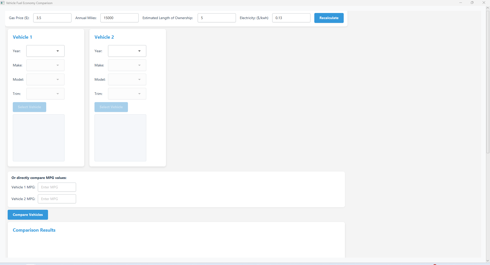
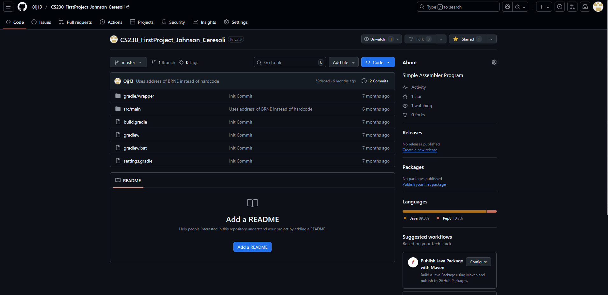
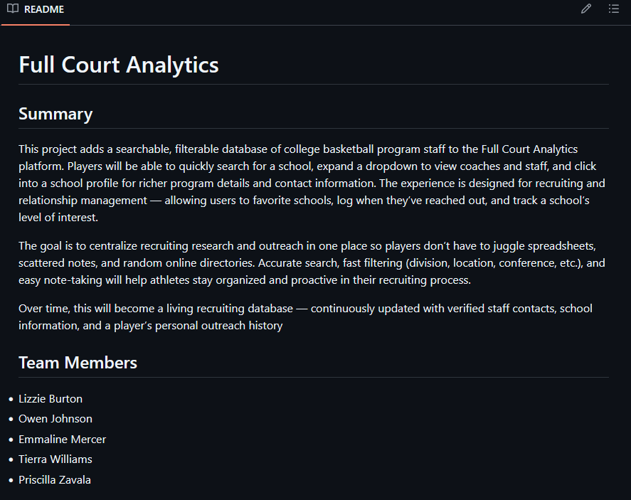
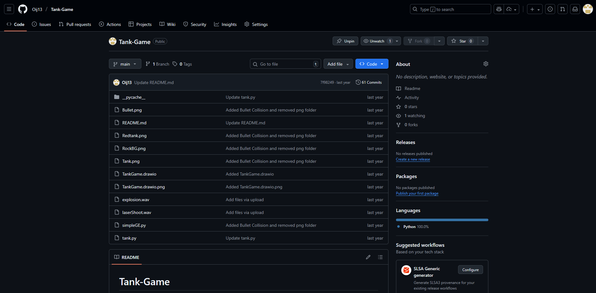
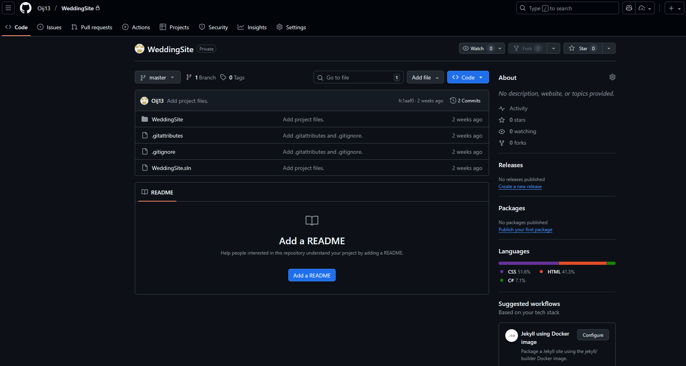

About Me
I am a Computer Science Student at Ball State University studying Web and Mobile App Development. I am continuosly expanding my knowledge of web development tools such as HTML, CSS, JS, and React. I also have experience developing front-end applications using Blazor and .NET 8.


My Projects
CS 222 Final Project
Java application that allows users to lookup or
simulate their vehicle to compare mpg cost and overall cost of the vehicle

CS 230 Assembler Project
Java project where I built a mini assembler that could take in
pep files and read and execute them. This project taught me a lot about reading and processing incoming files.

WIP Capstone Project
In a team of 5, we are building a site for highschool basketball players to
research and view schools and coaches at prospective colleges in one consolidated place.

CS 120 Final Project
My final project from my first year of CS. Simple tank game that tested my
understanding of barriers and x/y axies.

WIP Wedding Project
Wedding site I am working on with my girlfriend that will allow users to RSVP to our wedding
as well as view a gallery of photos stored in our database. There will also be links to external registries.

My Resume
About Me
Computer Science student at Ball State University specializing in Web and Mobile App Development. Experienced with Java through academic projects and C#/.NET from an internship at Formula Boats in Summer 2025. Developed practical skills in .NET Blazor, Dev Ops, SQL Server Management Studio, and Dapper ORM. Driven to apply my technical abilities and real-world experience to create impactful software and contribute to collaborative teams.
Current Role
Software Engineering Intern | Thunderbird Products | Decatur, Indiana
Assisted in the framework migration of a sales quoting site by rebuilding the site from scratch using .NET Blazor. Daily functions included setting up connections to stored procedures using Dapper, building Server-Side web pages using Razor, and interacting with my team through Dev Ops. I allocated 75% of my time to this responsibility at Thunderbird Products.
Skills
.NET 8 • C# • Blazor • Dapper • Java • Visual Studio • IntelliJ • HTML • CSS • Bootstrap • Azure Dev Ops • SQL Inquiries
Education
August 2023 to May 2026
Bachelor of Science Computer Science | Concentration in Web and Mobile App Development | Ball State University | Muncie, IN 3.8 GPA
Hobbies
Golf • Guitar • PC Assembly